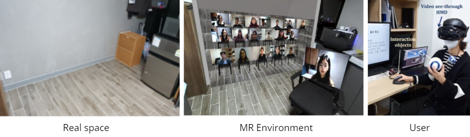
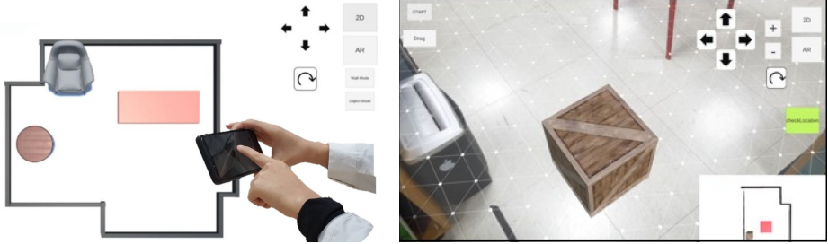
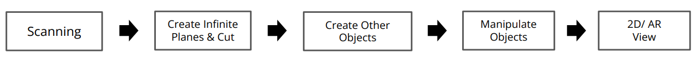
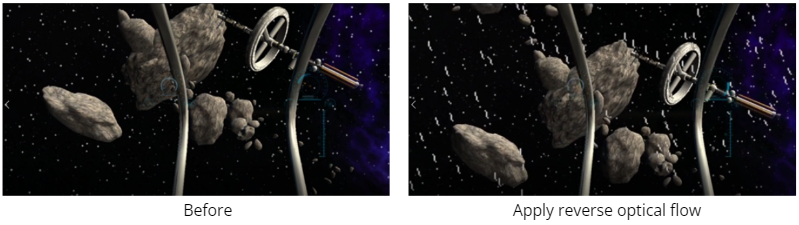
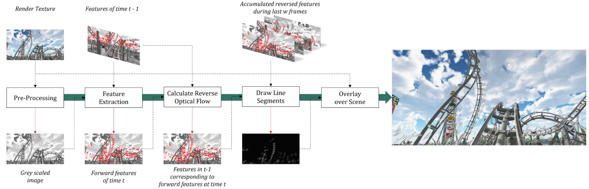
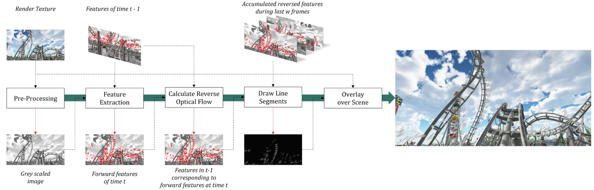
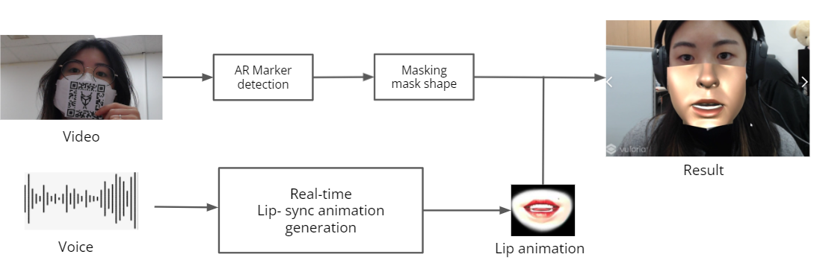
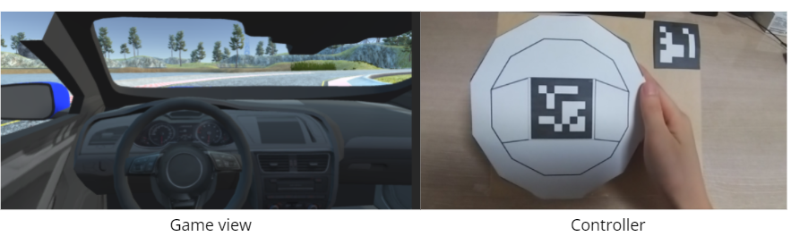
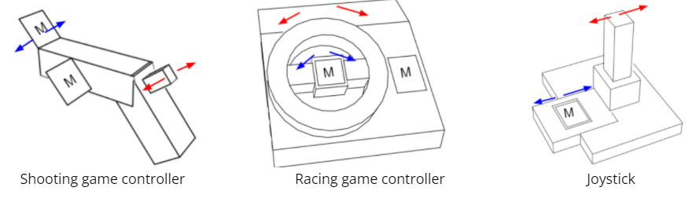
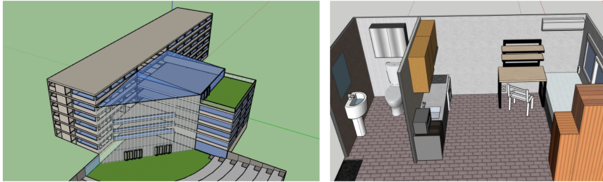

Portfolio
AudienceMR

AudienceMR is designed as a multi-user mixed reality space that seamlessly extends the local user space to become a large, shared classroom where some of the audience members are seen seated in a real space, and more members are seen through an extended portal. AudienceMR can provide a sense of the presence of a large-scale crowd/audience with the associated spatial context. In contrast to virtual reality (VR), however, with mixed reality (MR), a lecturer can deliver content or conduct a performance from a real, actual, comfortable, and familiar local space, while interacting directly with real nearby objects, such as a desk, podium, educational props, instruments, and office materials. Such a design will elicit a realistic user experience closer to an actual classroom, which is currently prohibitive owing to the COVID-19 pandemic.
[Publication]: Applied Science Paper link
Interior application using augmented reality

Using an approximate 2D map of the environment generated from the latest environment modeling technology and enhance the object manipulation performance
for the touch based mobile augmented reality.

[Publication]: 25th ACM Symposium on Virtual Reality Software and Technology Poster Poster link
[Publication]: 25th ACM Symposium on Virtual Reality Software and Technology Poster Poster link
Reverse Optical Flow Visualization Algorithm

Simulation sickness has been one of the major obstacles toward making virtual reality (VR) widely accepted and used. For example,
virtual navigation produces vection, which is the illusion of self-motion as one perceives bodily motion despite no movement actually
occurring. This, in turn, causes a sensory conflict between visual and actual (or vestibular) motion and sickness. In this study, we explore
a method to reduce VR sickness by visually mixing the optical flow patterns that are in the reverse direction of the virtual visual
motion. As visual motion is mainly detected and perceived by the optical flow, artificial mixing in the reverse flow is hypothesized
to induce a cancellation effect, thereby reducing the degree of conflict with the vestibular sense and sickness.

The ACM Conference on Human Factors in Computing Systems (CHI) 2022. [Accepted]

The ACM Conference on Human Factors in Computing Systems (CHI) 2022. [Accepted]
Lip animation generation for Hearing impairment and deafness

Since COVID-19, it has become inevitable to wear masks in all places. Wearing a mask causes communication problems because people cannot see the lower part of the face. This project makes it possible to communicate efficiently by synthesizing animation at the bottom of the face in real-time.
VR controller for Musical Instruments

Hand position and finger pose were measured using a Flex sensor and IMU. Users can play in a Virtual Environment without an actual instrument. Users can play musical instruments such as piano and guitar.
The controller consists of 5 flex sensors for sensing finger pose. Using 9-axis IMU for sensing hand rotation, and a microcontroller (MBN52832) for processing sensor data. We used mux to collect data from the five flex sensors, and the IMU data is transmitted through the I2C protocol.
Low cost VR controller
 
Make VR controllers in an inexpensive and accessible way using cardboard boxes. It can be used for shooting games, racing games, and simulation games. It is a non-electricity controller.
Virtual Reality Library

We developed a system that a mobile VR app and links it with an offline library. Non-contact library technology allows people to look around offline libraries and rent books. I implemented a virtual reality library based on the information of books held in offline libraries.
Architect

I modeled the building and interior using the SketchUp and 3D CAD.